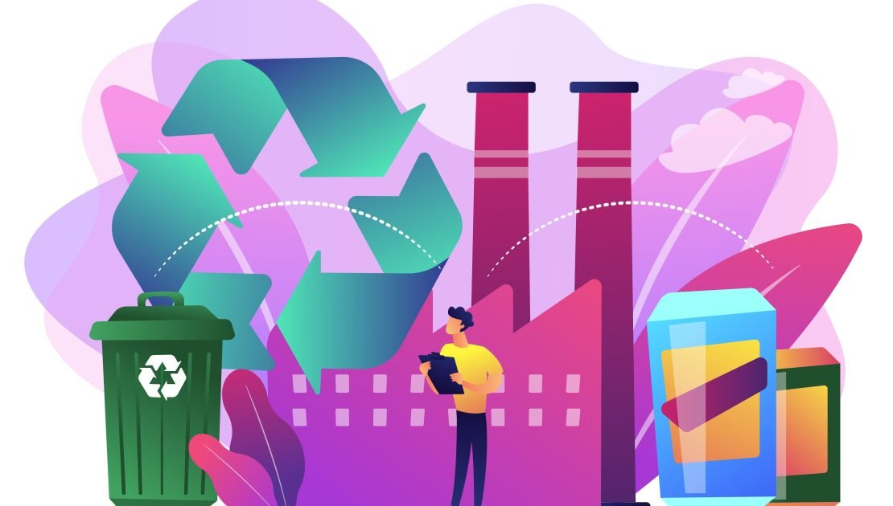

Conceptos
Residuos de Aparatos Electricos y Electronicos (RAEE)
¿Qué son los RAEE?
Los Residuos de Aparatos Eléctricos y Electrónicos (RAEE) son todos aquellos dispositivos eléctricos o electrónicos desechados por sus propietarios como residuos. Esto incluye desde electrodomésticos grandes como neveras y lavadoras, hasta dispositivos más pequeños como teléfonos móviles, computadoras y televisores.
Importancia de la gestión de RAEE
La gestión adecuada de los RAEE es crucial debido a la presencia de materiales peligrosos y valiosos en estos dispositivos. Sin una gestión adecuada, los RAEE pueden representar riesgos para la salud humana y el medio ambiente, pero también ofrecen oportunidades para la recuperación de materiales valiosos y la reducción de la demanda de recursos naturales.
